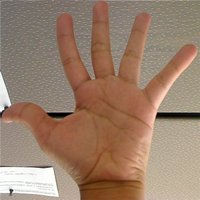
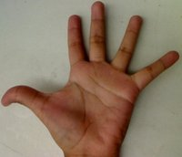

Copyright © Fred Weinhaus My scripts are available free of charge for non-commercial (non-profit) use, ONLY. For use of my scripts in commercial (for-profit) environments or non-free applications, please contact me (Fred Weinhaus) for licensing arrangements. My email address is fmw at alink dot net. If you: 1) redistribute, 2) incorporate any of these scripts into other free applications or 3) reprogram them in another scripting language, then you must contact me for permission, especially if the result might be used in a commercial or for-profit environment. Usage, whether stated or not in the script, is restricted to the above licensing arrangements. It is also subject, in a subordinate manner, to the ImageMagick license, which can be found at: http://www.imagemagick.org/script/license.php Please read the Pointers For Use on my home page to properly install and customize my scripts. |
|
Computes one of several metrics characterizing the difference between the histograms of two images. |
last modified: April 30, 2021
|
USAGE: histcompare [-p processing] [-m metric] [-n normalization] [-c] infile1 infile2
-p ... processing ...... processing of images; choices are: PURPOSE: To compute one of several metrics characterizing the difference between the histograms of two images. DESCRIPTION: HISTCOMPARE computes one of several metrics characterizing the difference between the histograms of two images. The user may choose either to process the images to grayscale, to append all the channels into one grayscale image or process each channel separately. The choice of metrics are: correlation, chisquare, intersection, bhattacharyya, earthmover, jeffrey or all. See the references below for the metric formulae. ARGUMENTS:
-p processing ... PROCESSING of the images. The choices are: -m metric ... METRIC is the desired difference metric. The choices are: correlation (co), chisquare (ch), intersection (i), bhattacharyya (b), earthmover (e), jeffrey (j) or all (a). The default=correlation. -n normalization ... NORMALIZATION of histogram counts. Values are specified as a comma separate pair, minval,maxval. The counts are scaled so that the minimum histogram count becomes minval and the maximum histogram count becomes maxval. The default=no scaling. -c ... divide the histogram counts by the CUMULATIVE count
REFERENCES: NOTE: This script will process only the first frame/page of a multiframe or multipage image. CAVEAT: No guarantee that this script will work on all platforms, nor that trapping of inconsistent parameters is complete and foolproof. Use At Your Own Risk. |
|
Example 1 - Global Histogram |
|
|
Input Images |
|
|
 |
 |
|
Arguments: |
Metric Score |
|
-p global -n 0,1 -m correlation |
global correlation = 0.766422 |
|
-p global -n 0,1 -m chisquare |
global chisquare = 6.79822 |
|
-p global -n 0,1 -m intersection |
global intersection = 53.3874 |
|
-p global -n 0,1 -m bhattacharyya |
global bhattacharyya = 0.26314 |
|
-p global -n 0,1 -m earthmover |
global earthmover = 1613.9 |
|
-p global -n 0,1 -m jeffrey |
global jeffrey = 7.19684 |
|
Example 2 - All (sRGB) Histograms |
|
|
Input Images |
|
|
Arguments: |
Metric Score |
|
-p all -n 0,1 -m correlation |
red correlation = 0.871993 |
|
-p all -n 0,1 -m chisquare |
red chisquare = 4.43458 |
|
-p all -n 0,1 -m intersection |
red intersection = 34.9194 |
|
-p all -n 0,1 -m bhattacharyya |
red bhattacharyya = 0.30614 |
|
-p all -n 0,1 -m earthmover |
red earthmover = -845.67 |
|
-p all -n 0,1 -m jeffrey |
red jeffrey = 4.97448 |
|
What the script does is as follows:
See the script for actual code details. |